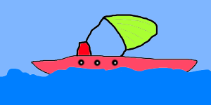

Wie fängt man so ein Projekt an? Einfach machen! Einfach einfach machen. Was ist denn der Worst Case der passieren kann, wenn mans nicht Hardcore verhaut?
Wenn man nie anfängt, dann kann man zwar nicht scheitern aber man hat dann auch nichts. Wenn man allerdings anfängt, ohoh, dann hat man was, dann ist man schon einen Schritt weiter.
Ziel dieses Blogs (ich denke mal das fällt in die Kategorie Blog) ist es primär eine kleine Schatztruhe/Sammelsurium/(ihr wisst schon) voller Dinge zu sein, die mich HÖCHSTPERSÖNLICH beschäftigen. Dabei wird absolut nichts kategorisch ausgeschlossen. Ganz nach dem Motto; anything goes.
Allerdings sollte hier eine Wahrnung ausgesprochen werden; das Geschriebene wird und ist bereits eine starke Projektion meiner selbst, da ich das in Eigenregie mache wird das unumgehbar sein.Ja das sieht mir doch ganz gut aus. Hier ein Bild:

Tja, soetwas ist hier wohl zu erwarten.
Zack fertig.
Zurück zum Archiv